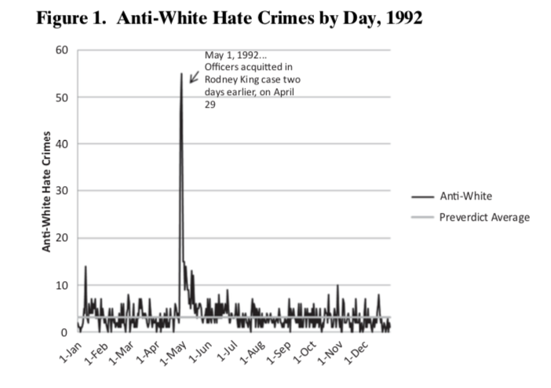

fbi_hate_crimes_1992
Sefa Ozalp
2019-11-14
Last updated: 2019-11-15
Checks: 7 0
Knit directory: fbi_hate_crimes_data_viz/
This reproducible R Markdown analysis was created with workflowr (version 1.4.0). The Checks tab describes the reproducibility checks that were applied when the results were created. The Past versions tab lists the development history.
Great! Since the R Markdown file has been committed to the Git repository, you know the exact version of the code that produced these results.
Great job! The global environment was empty. Objects defined in the global environment can affect the analysis in your R Markdown file in unknown ways. For reproduciblity it’s best to always run the code in an empty environment.
The command set.seed(20191114) was run prior to running the code in the R Markdown file. Setting a seed ensures that any results that rely on randomness, e.g. subsampling or permutations, are reproducible.
Great job! Recording the operating system, R version, and package versions is critical for reproducibility.
Nice! There were no cached chunks for this analysis, so you can be confident that you successfully produced the results during this run.
Great job! Using relative paths to the files within your workflowr project makes it easier to run your code on other machines.
Great! You are using Git for version control. Tracking code development and connecting the code version to the results is critical for reproducibility. The version displayed above was the version of the Git repository at the time these results were generated.
Note that you need to be careful to ensure that all relevant files for the analysis have been committed to Git prior to generating the results (you can use wflow_publish or wflow_git_commit). workflowr only checks the R Markdown file, but you know if there are other scripts or data files that it depends on. Below is the status of the Git repository when the results were generated:
Ignored files:
Ignored: .DS_Store
Ignored: .Rhistory
Ignored: .Rproj.user/
Ignored: data/.DS_Store
Ignored: data/data_2017/.DS_Store
Ignored: data/data_2017/raw/.DS_Store
Ignored: data/data_2017/raw/Hate Crime Statistics 2017 Tables/.DS_Store
Ignored: data/open_ICPSR/.DS_Store
Ignored: data/ucrpd/.DS_Store
Ignored: data/ucrpd/data_1992/.DS_Store
Ignored: data/ucrpd/data_1992/ds1_batch_header/.DS_Store
Ignored: data/ucrpd/data_1992/ds2_incident_record/.DS_Store
Ignored: data/ucrpd/data_1993/.DS_Store
Ignored: data/ucrpd/data_1993/ICPSR_24240/.DS_Store
Ignored: data/ucrpd/data_1994/
Ignored: data/ucrpd/data_1995/
Ignored: data/ucrpd/data_1996/
Ignored: data/ucrpd/data_1997/
Ignored: data/ucrpd/data_1998/
Ignored: data/ucrpd/data_1999/
Ignored: data/ucrpd/data_2000/
Ignored: data/ucrpd/data_2001/
Ignored: data/ucrpd/data_2002/
Ignored: data/ucrpd/data_2003/
Ignored: data/ucrpd/data_2004/
Ignored: data/ucrpd/data_2005/
Ignored: data/ucrpd/data_2006/
Ignored: data/ucrpd/data_2007/
Ignored: data/ucrpd/data_2008/
Ignored: data/ucrpd/data_2009/
Ignored: data/ucrpd/data_2010/
Ignored: data/ucrpd/data_2011/
Ignored: data/ucrpd/data_2012/
Ignored: data/ucrpd/data_2013/
Ignored: data/ucrpd/data_2014/
Ignored: data/ucrpd/data_2015/
Ignored: data/ucrpd/data_2016/
Ignored: data/ucrpd/data_2017/
Ignored: data/ucrpd/data_2018/
Ignored: data/ucrpd/data_2019/
Ignored: docs/.DS_Store
Note that any generated files, e.g. HTML, png, CSS, etc., are not included in this status report because it is ok for generated content to have uncommitted changes.
These are the previous versions of the R Markdown and HTML files. If you’ve configured a remote Git repository (see ?wflow_git_remote), click on the hyperlinks in the table below to view them.
| File | Version | Author | Date | Message |
|---|---|---|---|---|
| html | 5e93796 | Sefa Ozalp | 2019-11-15 | update index |
| rmd | 7627c7c | Sefa Ozalp | 2019-11-15 | wip FBI data plots |
| html | 7627c7c | Sefa Ozalp | 2019-11-15 | wip FBI data plots |
Introduction
This document will recreate the Figure 1 from the ‘High Times for Hate Crimes’ paper (King and Sutton 2013). A screenshot of the plot is provided below 
This is a time series line chart, illustrating the daily count of anti-white hate crimes recorded in the FBI dataset in 1992. We observe a sudden spike following the riots which followed the acquittal of officers in Rodney King case. The spike decays rapidly; however, the increase in anti-white hate crime rates persists for a couple of weeks. Pre-incident average line is also provided for comparison and it suggests the national hate-crime were increased temporarily until they returned to normal in 6 weeks.
Sub-tasks
The sub-tasks to recreate the graph are as follows:
Find the data of hate crimes during 1992 on FBI website. Import and process the data. Calculate pre-incident mean. Reproduce the graph.
library(tidyverse)load(here::here("/data/open_ICPSR/ucr_hate_crimes_1992_2017_rda/ucr_hate_crimes_1992_2017.rda"))Lets check the data over.
ucr_hate_crimes_1992_2017 %>%
as.tibble() %>%
select(contains("year")) %>%
count(year) %>%
ggplot(aes(x=year, y=n))+
geom_line()+
scale_x_continuous(breaks = seq(1992,2017,1))Warning: `as.tibble()` is deprecated, use `as_tibble()` (but mind the new semantics).
This warning is displayed once per session.
| Version | Author | Date |
|---|---|---|
| 7627c7c | Sefa Ozalp | 2019-11-15 |
###Calculate pre-riot mean
preriot_mean <- ucr_hate_crimes_1992_2017 %>%
as.tibble() %>%
filter(year==1992) %>%
filter(bias_motivation_offense_1 %in% "anti-white") %>%
select(contains("date")) %>%
count(date) %>%
filter(!is.na(date)) %>%
mutate(date=lubridate::ymd(date)) %>%
filter(date<lubridate::dmy("31-04-1992")) %>%
summarise(mean(n)) %>%
pullWarning: 1 failed to parse.Reproduce the Figure from King and Sutton 2013
ucr_hate_crimes_1992_2017 %>%
as.tibble() %>%
filter(year==1992) %>%
mutate(date=lubridate::ymd(date)) %>%
filter(bias_motivation_offense_1 %in% "anti-white") %>%
filter(!is.na(date)) %>%
count(date) %>%
right_join( tibble(date=seq.Date(lubridate::dmy("01-01-1992"), lubridate::dmy("31-12-1992"), by="day"))) %>%
mutate(n=ifelse(is.na(n), 0, n)) %>%
mutate(preriot_mean=preriot_mean) %>%
ggplot(aes(x=date))+
geom_line(aes(y=n, colour="Anti-White"), size=0.8)+
geom_line(aes(y=preriot_mean, colour="Pre-riot Average"), size=0.8)+
hrbrthemes::theme_ipsum_rc()+
scale_x_date(date_breaks = "1 month", date_labels = "%d-%b-%y",
limits = c(lubridate::dmy("01-01-1992"), lubridate::dmy("31-12-1992")),
expand=c(0,0))+
scale_y_continuous(limits = c(0,60), breaks = seq(0,60,10),minor_breaks = NULL)+
theme(axis.text.x = element_text(angle = 45, hjust = 1))+
annotate(geom="text", x=lubridate::dmy("30-06-1992"), y=55, label="May 1, 1992\nLAPD Officers acquitted\nin Rodney King case\ntwo days earlier,\non April 29." )+
annotate(geom="point", lubridate::dmy("01-05-1992"), y=55, size=8, shape=21, fill="transparent")+
labs(title = "Anti-White Hate Crimes in the US, 1992")+
scale_colour_manual(
breaks = c("Anti-White", "Pre-riot Average"),
values = c("Anti-White"="black", "Pre-riot Average"="grey73")
) +
geom_hline(yintercept=3, color="grey66", size=1, show.legend = T)+
NULLJoining, by = "date"Warning: Removed 366 rows containing missing values (geom_path).
| Version | Author | Date |
|---|---|---|
| 7627c7c | Sefa Ozalp | 2019-11-15 |
# ggsave(ks_plot,filename = "ks_plot.pdf",device = cairo_pdf,width = 8, height = 6)King, Ryan D., and Gretchen M. Sutton. 2013. “High Times for Hate Crimes: Explaining the Temporal Clustering of Hate-Motivated Offending: High Times for Hate Crimes.” Criminology 51 (4): 871–94. https://doi.org/10.1111/1745-9125.12022.
sessionInfo()R version 3.6.1 (2019-07-05)
Platform: x86_64-apple-darwin15.6.0 (64-bit)
Running under: macOS Mojave 10.14.6
Matrix products: default
BLAS: /Library/Frameworks/R.framework/Versions/3.6/Resources/lib/libRblas.0.dylib
LAPACK: /Library/Frameworks/R.framework/Versions/3.6/Resources/lib/libRlapack.dylib
locale:
[1] en_GB.UTF-8/en_GB.UTF-8/en_GB.UTF-8/C/en_GB.UTF-8/en_GB.UTF-8
attached base packages:
[1] stats graphics grDevices utils datasets methods base
other attached packages:
[1] forcats_0.4.0 stringr_1.4.0 dplyr_0.8.3 purrr_0.3.2
[5] readr_1.3.1 tidyr_1.0.0 tibble_2.1.3 ggplot2_3.2.1
[9] tidyverse_1.2.1
loaded via a namespace (and not attached):
[1] hrbrthemes_0.6.0 tidyselect_0.2.5 xfun_0.9
[4] haven_2.1.1 lattice_0.20-38 colorspace_1.4-1
[7] vctrs_0.2.0 generics_0.0.2 htmltools_0.3.6
[10] yaml_2.2.0 rlang_0.4.0 pillar_1.4.2
[13] glue_1.3.1 withr_2.1.2 gdtools_0.2.0
[16] modelr_0.1.5 readxl_1.3.1 lifecycle_0.1.0
[19] munsell_0.5.0 gtable_0.3.0 workflowr_1.4.0
[22] cellranger_1.1.0 rvest_0.3.4 evaluate_0.14
[25] labeling_0.3 knitr_1.25 extrafont_0.17
[28] Rttf2pt1_1.3.7 broom_0.5.2 Rcpp_1.0.2
[31] scales_1.0.0 backports_1.1.4 jsonlite_1.6
[34] systemfonts_0.1.1 fs_1.3.1 hms_0.5.1
[37] digest_0.6.21 stringi_1.4.3 grid_3.6.1
[40] rprojroot_1.3-2 here_0.1 cli_1.1.0
[43] tools_3.6.1 magrittr_1.5 lazyeval_0.2.2
[46] extrafontdb_1.0 crayon_1.3.4 whisker_0.4
[49] pkgconfig_2.0.3 zeallot_0.1.0 xml2_1.2.2
[52] lubridate_1.7.4 assertthat_0.2.1 rmarkdown_1.15
[55] httr_1.4.1 rstudioapi_0.10 R6_2.4.0
[58] nlme_3.1-141 git2r_0.26.1 compiler_3.6.1